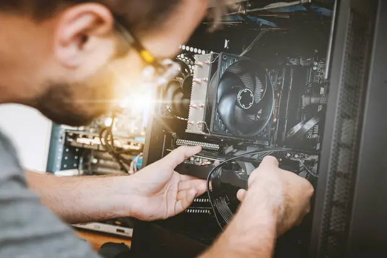
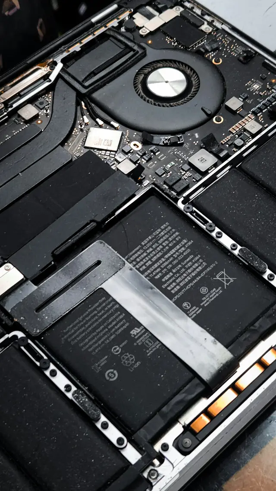
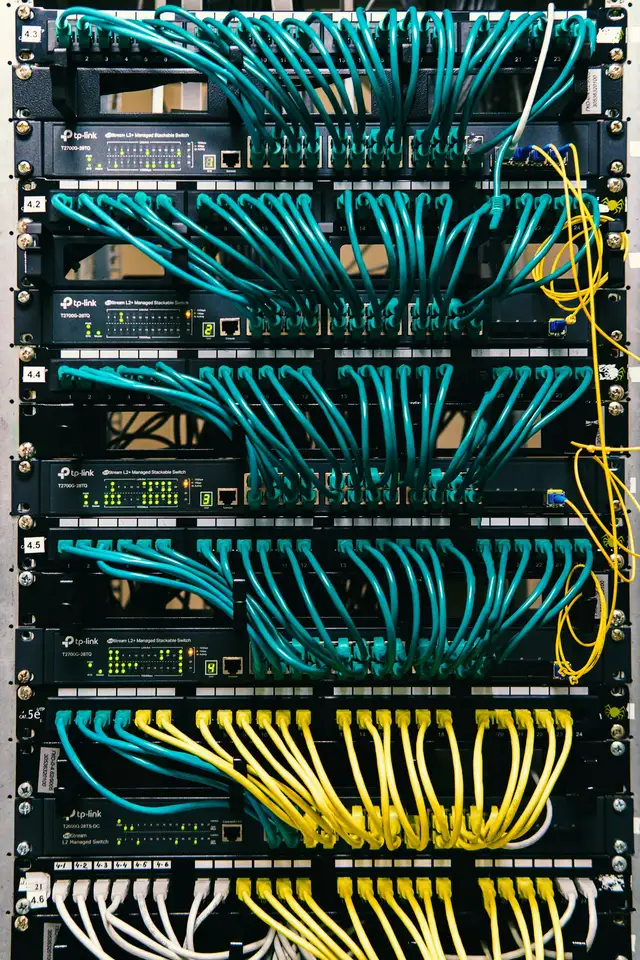
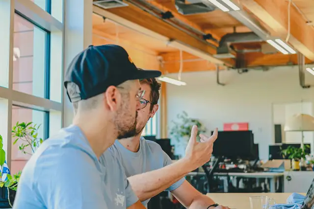
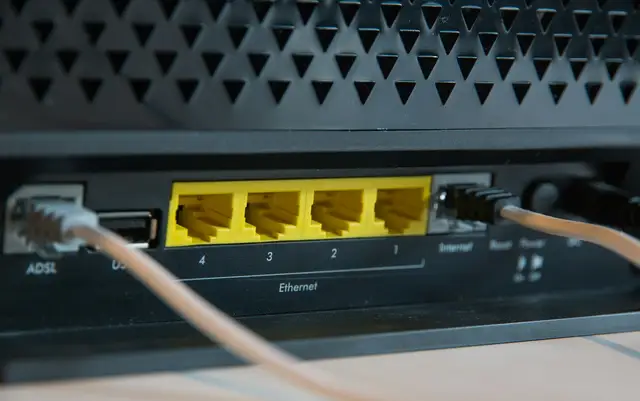

Computadores e redes funcionando como deveriam.
Manutenção preventiva e corretiva, formatação, limpeza e troca de peças. Rede cabeada, Wi‑Fi e suporte técnico para você e para a sua empresa.
Orçamento sem compromisso · WhatsApp (11) 94549-8733 (abre em nova aba)

Orçamento sem compromissoVocê sabe o valor antes de decidir.
Você aprova a peçaNada é trocado sem a sua aprovação.
Horário combinadoConfirmamos pelo WhatsApp.
Valores e prazos clarosCombinados antes do serviço.
Problemas que resolvemos.
Escolha o que está acontecendo e veja como a AtomTuring resolve.
Limpeza interna de ventoinhas e coolers para baixar a temperatura.
Agendar este atendimento
Instalação e configuração de rede cabeada, com cabos e pontos no lugar.
Agendar este atendimento
Pacote mensal fechado com suporte, emergência e gestão de equipamentos. Valores sob consulta.
Agendar este atendimento

Computadores, redes e Wi‑Fi.
Do notebook que trava ao Wi‑Fi que cai. Para empresas, há um pacote mensal logo mais abaixo.
Computadores
Notebooks e desktops com manutenção de verdade, por dentro e por fora.
- Manutenção preventiva e corretiva
- Revisamos antes de dar problema e corrigimos quando algo falha.
- Formatação e otimização
- Sistema limpo, instalado e rápido de novo.
- Limpeza interna
- Ventoinhas, coolers e componentes limpos. Menos calor, menos barulho.
- Substituição de peças
- Diagnóstico, instalação e teste, com a sua aprovação antes.
Redes e Wi‑Fi
Conexão estável, organizada e configurada para o uso real da casa ou da empresa.
- Instalação de rede cabeada
- Cabos e pontos de rede instalados e organizados.
- Otimização de sinal
- O Wi‑Fi chegando bem onde você realmente usa.
- Configuração de equipamentos
- Roteadores, switches e demais equipamentos configurados.
- Suporte e acompanhamento
- Alguém para chamar quando a rede der problema.

Do chamado ao acompanhamento.
Cinco etapas, na ordem. Você sabe em que ponto está e o que vem a seguir.
Entendimento do problema
Você conta o que está acontecendo, pelo WhatsApp, Direct ou formulário.
Diagnóstico e avaliação
Avaliamos o equipamento ou a rede para achar a causa real, sem chutar.
Orçamento
Apresentamos o valor antes de qualquer serviço. Você decide, sem compromisso.
Execução do serviço
Manutenção, limpeza, formatação, troca de peças ou configuração da rede.
Acompanhamento
Suporte depois do serviço e acompanhamento contínuo para quem precisa.

Tecnologia da empresa sob controle.
Um pacote mensal fechado: a empresa deixa de correr atrás de problemas e passa a contar com suporte, acompanhamento e gestão dos equipamentos.
- Suporte técnicoAjuda de quem entende, sempre que a equipe precisar.
- Atendimento de emergênciaQuando algo importante para, a empresa sabe a quem chamar.
- Gestão de equipamentosControle do que a empresa tem e em que estado cada equipamento está.
- ManutençãoPreventiva e corretiva nos computadores. Peças cobradas à parte.
- LimpezaLimpeza interna dos equipamentos, para evitar superaquecimento.
Valores sob consulta, sem preço fixo. Cada empresa recebe uma proposta.

Vamos resolver o seu problema?
Orçamento sem compromisso. Confirmamos o horário pelo WhatsApp.